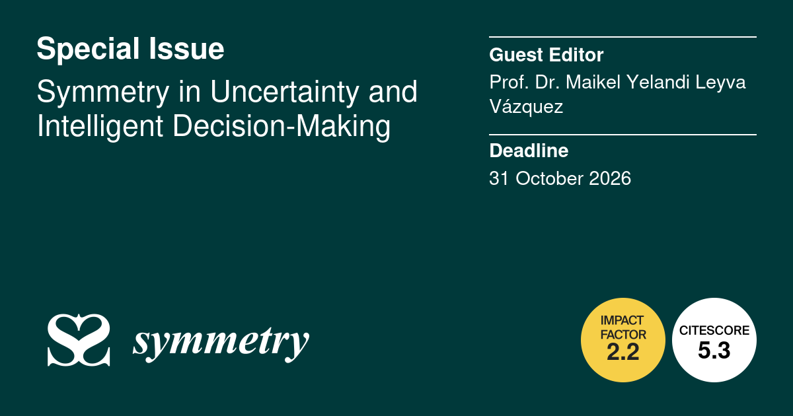

Special Issue · Open Call for Papers
A curated collection in Symmetry (MDPI) on the role of symmetry and asymmetry in modeling, measuring, and reducing uncertainty across fuzzy, neutrosophic, plithogenic, and probabilistic frameworks.

Guest Editor
Faculty of Mathematical and Physical Sciences, Universidad de Guayaquil (Guayaquil, Ecuador). Editor-in-Chief of Neutrosophic Sets and Systems (NSS, Scopus Q1) and Neutrosophic Computing and Machine Learning (NCML). Director of the Asociación Latinoamericana de Ciencias Neutrosóficas (ALCN). Co-author with Florentin Smarandache of The Honest Classroom and The Third Answer.
ORCID: 0000-0003-2799-3990 · Contact: mleyvaz@gmail.com
Scope
Symmetry is a fundamental principle in many frameworks for representing uncertainty and supporting intelligent decision-making. It appears in aggregation operators through anonymity and reciprocity axioms, in symmetric divergences such as Jensen–Shannon and Hellinger, and in balanced models based on fuzzy, intuitionistic, neutrosophic, plithogenic, and bipolar sets.
Symmetry often improves mathematical tractability and interpretability, while symmetry breaking — asymmetric preferences, heavy-tailed uncertainty, or non-reciprocal trust — can reveal key features of decision problems.
This Special Issue invites original contributions on the role of symmetry and asymmetry in modeling, measuring, and reducing uncertainty in intelligent decision-making. Symmetry-aware and symmetry-breaking approaches are equally welcome.
La simetría es un principio fundamental en numerosos marcos para representar la incertidumbre y apoyar la toma de decisiones inteligente. Aparece en los operadores de agregación a través de los axiomas de anonimato y reciprocidad, en divergencias simétricas como Jensen–Shannon y Hellinger, y en modelos balanceados sobre conjuntos difusos, intuicionistas, neutrosóficos, plitogénicos y bipolares.
La simetría mejora la tractabilidad matemática y la interpretabilidad, mientras que la ruptura de simetría — preferencias asimétricas, incertidumbre de cola pesada, confianza no recíproca — revela las propiedades más informativas de los problemas reales de decisión.
Este SI invita contribuciones originales sobre el papel de la simetría y la asimetría en el modelado, medición y reducción de la incertidumbre. Aproximaciones tanto symmetry-aware como symmetry-breaking son igualmente bienvenidas.
Topics in scope
Important dates
| Milestone | Date |
|---|---|
| Submission portal opens | 28 April 2026 ✅ |
| Submission deadline | 31 October 2026 |
| Expected publication | Rolling — articles online upon acceptance (Open Access) |
How to submit
Manuscripts should be submitted through the MDPI submission system. During submission, please select "Symmetry in Uncertainty and Intelligent Decision-Making" as the Special Issue from the dropdown list.
All manuscripts undergo standard peer review. Please follow the Instructions for Authors and use the official Symmetry LaTeX or Word template.
The standard Article Processing Charge (APC) is 2400 CHF. For authors based at Latin American institutions, I am coordinating partial or full APC waivers on a case-by-case basis with the editorial office. Please contact me at mleyvaz@gmail.com before submission to discuss waiver eligibility.
For authors of the Asociación Latinoamericana de Ciencias Neutrosóficas (ALCN) and contributors to NSS / NCML, I will prioritize waiver requests within the available quota.
Contact
If you are unsure whether your work fits the Special Issue, or if you would like to discuss framing before submission, please reach out. I am happy to provide informal feedback on abstracts before formal submission.
Email: mleyvaz@gmail.com
ORCID: 0000-0003-2799-3990
Affiliation: Faculty of Mathematical and Physical Sciences, Universidad de Guayaquil, Guayaquil 090613, Guayas, Ecuador
Editorial office (MDPI): symmetry@mdpi.com · MDPI, Grosspeteranlage 5, 4052 Basel, Switzerland
← Back to homepage